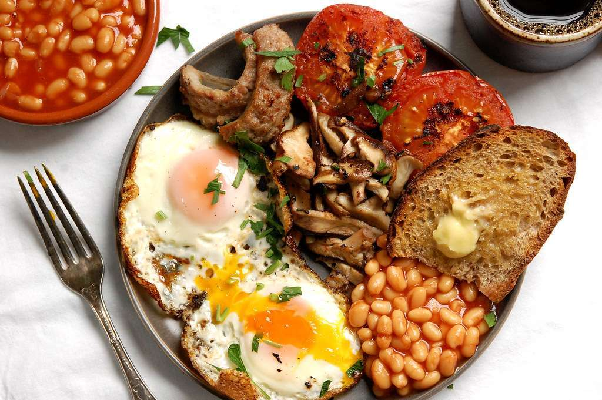

English Breakfast Recipes

Video
Full English Breakfast
Traditional British breakfast with eggs, sausage, bacon, and more.
- Fry sausages, bacon, and black pudding until browned.
- Grill tomatoes and mushrooms.
- Fry eggs sunny side up.
- Serve with baked beans and buttered toast.
Video